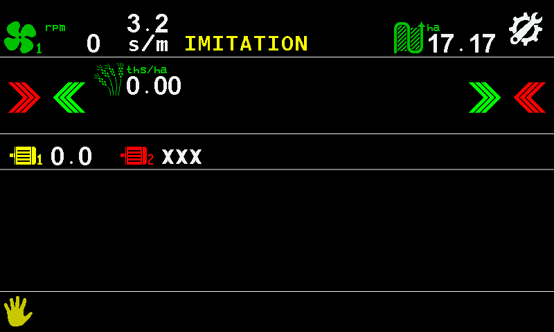

The second home screen
The home screen for a machine without seed sensors — what is on it, how to open and close it, and what its chevrons and tiles do.
This screen was made for a system without seed sensors: a machine where the seeding rate is held by the dispenser electric motors and the panel monitors the main working units. On such a machine the ordinary home screen would be almost empty.
Open it from the home screen with a swipe to the right. Close it with “HOME” or a swipe to the left. It is not part of the circle of working screens, and the panel does not switch to it by itself — even on a machine without seed sensors it starts on the ordinary home screen.

- Fan. The fan and its speed in rpm.
- Seed spacing. In seeds per metre.
- Travel speed. In km/h; yellow while it is simulated. Speed
- Area. Hectares treated on the active field.
- Settings symbol. A touch opens the main menu, the same as “MENU”.
- Red chevrons. A touch takes the outermost motor on that side out of control.
- Green chevrons. A touch takes the next motor towards that side back into control.
- Target rate. In thousands of seeds per hectare. Touch and hold it, then swipe up or down to change it.
- Motor 1. Its number and value; the icon alternates with the state sign — here STOP, the motor is not running.
- Motor 2. A red × and XXX — no connection; the motor is not driven.
- Manual lock. The yellow hand: application is locked by hand. Touch and hold it, or hold “HOME”, to lock or unlock.
Each motor icon alternates, about once a second, between the picture of the motor and the sign of its state. In the other blink phase the same screen looks like this — the motors are drawn as motor symbols, and the word “IMITATION” has replaced the speed figure because the speed is simulated:

What you can do here
| To do this | Do this |
|---|---|
| Open the main menu | “MENU”, or touch the settings symbol |
| Change the seeding rate | Touch and hold the rate, then swipe up or down. It stays within the permitted limits. |
| Take motors out of or into control | Touch the red or green chevrons at either end of the rate strip. Confirm with “Yes” if the panel asks. |
| Open the settings of a motor | Touch and hold the motor |
| Lock or unlock product application | Hold “HOME”, or touch and hold the hand. A short beep confirms. |
| Return to the home screen | “HOME”, or swipe left |
What the motor states mean: Motors screen.
Something your machine does that this page does not answer? Write to support@agriwelt.com — an engineer answers.